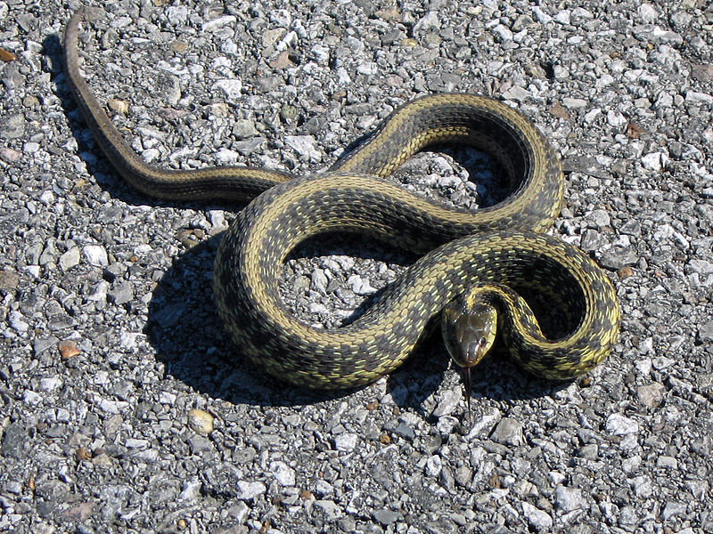
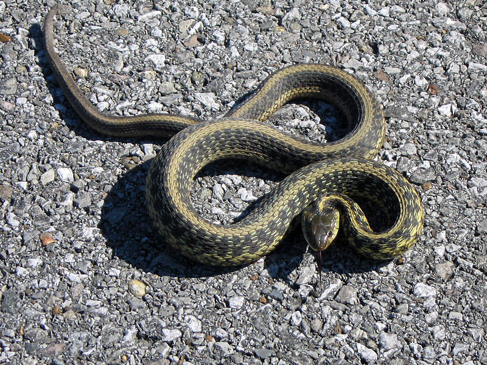

|  | Содержание страницы |
|  | Содержание страницы |
Змеи (лат. Serpentes) — подотряд класса пресмыкающихся отряда чешуйчатые. Змеи обитают на всех континентах, кроме Антарктиды и нескольких крупных островов, таких как Ирландия и Новая Зеландия, а также множества мелких островов Атлантического океана и центральной части Тихого океана.
Некоторые змеи ядовиты, но неядовитые представлены бóльшим количеством видов. Ядовитые пользуются ядом в первую очередь для охоты (чтобы убить жертву), а не для самозащиты. Яд некоторых видов достаточно силён, чтобы убить человека. Неядовитые змеи либо заглатывают добычу живьём (ужи), либо предварительно убивают (удушают) её (полозы, удавы). Самые крупные известные змеи из ныне живущих на Земле — сетчатый питон и водяной удав анаконда. Длина самых мелких змей из ныне живущих — Leptotyphlops carlae — не превышает 10 сантиметров. Размер большинства змей не превышает одного метра.
Змеи произошли от ящериц и являются монофилетической группой. По молекулярным данным, ближайшие их родственники среди современных ящериц — игуанообразные и веретеницеобразные, образующие вместе с ними кладу Toxicofera. Некоторые морфологические исследования указывают на то, что в эту кладу входят и мозазавры, причём они являются сестринской группой змей.
Древнейшие известные (на 2014 год) ископаемые остатки змей происходят из среднеюрских отложений Англии (около 167 млн лет назад, Eophis underwoodi). С верхнего мела остатки становятся относительно многочисленными.
Эволюция змей сопровождалась существенными изменениями в высококонсервативном регуляторном участке, отвечающем за включение экспрессии гена SHH (Sonic hedgehog). В результате замен и делеций внутри энхансера оказались «испорчены» или утрачены сайты связывания транскрипционных факторов, и ген SHH перестал включаться в тех зонах эмбриона, где у всех остальных позвоночных, от хрящевых рыб до млекопитающих, формируются почки конечностей. Сам ген и другие его регуляторные области остались при этом консервативными, как и следовало ожидать, исходя из многофункциональности гена SHH.
Змеи освоили практически все жизненные пространства Земли, кроме воздушного. Они встречаются на всех материках, кроме Антарктиды. Змеи распространены от Полярного круга на севере до южной оконечности Американского материка. Особенно многочисленны они в тропических областях Азии, Африки, Южной Америки и в Австралии. Отсутствуют на высоких широтах (в том числе в Гренландии и Исландии), а также в Ирландии и Новой Зеландии.
Предпочитают обитать на территориях с жарким климатом. Обитают в различных экологических условиях — лесах, степях, пустынях, в предгорьях и горах. Змеи в основном ведут наземный образ жизни, но некоторые виды живут под землей, в воде, на деревьях. При наступлении неблагоприятных условий (например, при похолодании) змеи впадают в спячку.
Все известные змеи — хищники. Питаются разнообразными животными, в том числе морскими обитателями: позвоночными и беспозвоночными. Существуют виды змей, которые специализируются на поедании определённого вида добычи, то есть стенофаги. Например, глянцевый рачий уж (Liodytes rigida) питается почти исключительно речными раками, а африканские яичные змеи (Dasypeltis) — только яйцами птиц.
Неядовитые змеи заглатывают добычу живьём (например, ужи) либо предварительно умертвляют её, сжимая челюстями и придавливая телом к земле (стройные полозы) или удушая в кольцах тела (удавы и питоны). Ядовитые змеи убивают добычу, вводя в её тело яд при помощи специализированных ядопроводящих зубов.
Змеи, как правило, заглатывают добычу целиком. Механизм заглатывания состоит в попеременном движении правой и левой половинами нижней челюсти (змея как бы натягивает себя на добычу).
Основные группы змей — Scolecophidia (слепые змеи, 1 надсемейство) и Alethinophidia (все остальные змеи, 5 надсемейств). Иногда им придают ранг инфраотрядов. Alethinophidia делят на Caenophidia (высшие и бородавчатые змеи) и Henophidia (все остальные).
По данным базы The Reptile Database, по состоянию на февраль 2017 года известен 3631 вид змей. Их объединяют в более 20 семейств и 6 надсемейств (4 семейства пока не включены ни в одно надсемейство). Ядовитые змеи составляют около четверти известных видов.